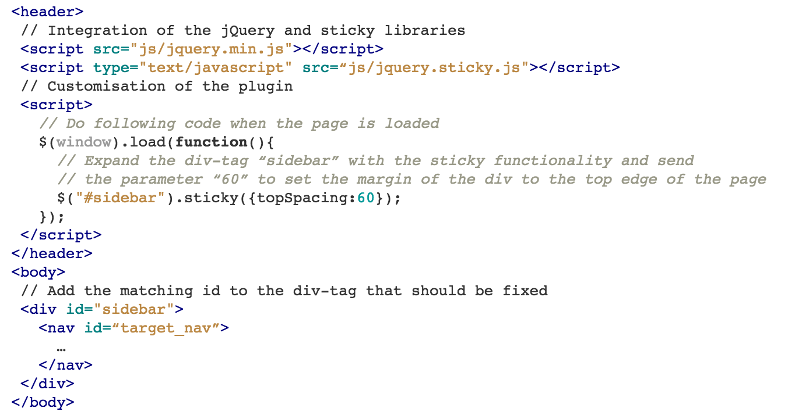

Today, we take more than 380 billion photos a year. Most of them display ourselves, our families or things we experienced. In the time of social media a lot has changed how we deal with pictures, but still only a small percentage of these images is perceived by other people. So I decided to make my project about a few of my pictures. Specifically my idea for the website was, to bring all my recent travel destinations on one webpage to show it to relatives or inspire other travellers. I wanted to use only really well taken pictures, so I decided to photoshop them first. I wanted to show the beauty of the different destinations I visited, so I used my own images to give it a very personal touch. To round it up and bring some movement to the page I embedded a video from Vimeo for every destination. I did a research to find videos that exactly display my experience I had with the places or how I see my future trips.
The one-page Website is separated in three main sections. Conforming to the brief, there is a “past”, a “present” and a “future” part. The past one is the largest section, because I list there all my destinations of the last three years. The present section is all about London. The most complicated part to get content for, was the future. I had to find friends who already visited the places, I would like to go to in the next years.
My first idea, how I would like to design the page, was more like a full-width travel map. The map should have functioned as a navigation menu. If you click on a destination in the map, the website had navigated to the single destination page with text and images related only to that one destination. But I wanted to design the entire page more like a timeline. Therefore all destinations are on one page. The genre of my website is clearly autobiographic, because the text is written in the first person perspective and everything is about my own experiences, travels and future travel wishes.
The main target group are my relatives and friends, who want to know more about my travels. There is no limitation in gender, age, income or something else. Everyone could enjoy the images and travel experiences. The only restriction is related to the fact that the text is written in english, so the user should be able to understand the english language to completely understand.
When the user enters the page he just see a black and white full-page background image of a wave at the Hawaiian coast and the name of the page “Alexander’s Travels” and the navigation bar. Immediately after the full page is loaded an imaginary typewriter starts to write a text passage in the middle of the page. There is the sentence “Places I saw, where I am now and future plans”, written automatically. After that the page slides smoothly down to the top of the included world map. The user is now able to scroll down the timeline itself or navigate using the map to a destination. To find the right location he can zoom into the map, by using the mouse wheel or the track pad on a Mac. Below the map is the main content of the website (images, texts and videos of the destinations) located. On the left side of the website is a fixed navigation presented, which shall make it clearly to the user where he actually is on the one-pager. On the right side is the main content. The content consists texts, images and videos. If the user clicks on an image, a gallery will open from the left or the right side of the page with the bigger image gallery of that specific destination.
The page layout is fully responsive designed and coded, so it will be displayed perfectly on tablet and mobile as well. I have chosen a one-pager design for the website, because I wanted to display all images on one page to add a timeline navigation. There are several ways to navigate through the website. The main navigation on top helps to get a fast access to every destination, the map and the essay. The world map ,with its clickable destination buttons, is a more playful navigation for the user. He should get a little bit the feeling of an explorer, who just travel around the world by himself by watching the different images and videos. The third navigation type is the timeline on the left to the content. To keep the page design consistent clean, only the time section where the actual displayed destination is from is unfolded. To show the user his position in time the current destination name in the timeline is displayed in a different colour.
The rest of the page layout is really clear and flat, too. There is a lot of white space to support the presentation of the images. I don't want to distract the user with a lot of different design elements. Because the main focus of the user is expected to be on the pictures and videos, they also occupy most of the page space. In the mobile version of the website, I even dispense the appearance of the navigation on the left. The only colour, besides of white, a few greys and black, is a green and a orange for some font-effects and the map. To reflect this style in the font-choice as well, I have chosen the sans serif typeface “Source Sans Pro”. I used the same font family for every text on the page. I differentiate only in the font weight, size and colour. I still wanted to show the diversity of the different destinations, therefore every destination section has its own content order. The only thing what is the same for each destination is the big header image with the title on it. After that is no specific rule if the video, the images or text comes first or second. I even change the text position in the left or the right column.
Header navigation
The header navigation is a usual one line dropdown menu. With hovering over the level 1 navigation item, the user sees the level 2 items. Level 1 are the timeline elements, the essay and the map. Level 2 are the different destinations of the time sections. After clicking an item the user will be forwarded to that chosen part of the same page. All the anchor links, besides of the “essay”, are anchor links that points to anchors on the same page. The same applies to the sidebar navigation and the world map navigation.
Typewriter text
The automatic typewriter text shall generate extra excitement for the user, because he has to wait a bit to read the entire text. This text is written with the help of the jQuery plugin Type.js.
World map
The world map is another way to navigate through the website. It is a customised jQuery Plugin called Mapael. On the desktop version of the website has the user the possibility to use the map. For tablet and mobile I disabled the map because of space and usability reasons.
Sidebar navigation
The sidebar navigation is the third and last way to explore the website. With the help of the jQuery plugin sticky.js the navigation will be fixed on the left side and moves with the page content. To track the current destination which is displayed on the screen right now, I use the scroll spy of bootstrap. With the spy it is possible to distinguish the matching part in the navigation different.
Destinations
Each of the twelve destinations has its own section with different subelements and different, but consistent layouts.
Header image with title
The first image is always a large area header and it contains the destination title. If the user hovers over this part, the image gets zoomed in and it gets a darker background. This movement has the effect, that the user is able to dive into the new destination story.
Halfwidth image
All the other images for each destination are displayed only on the half area. It seems a little bit like a gallery the user is walking through. If he clicks on an image the gallery for this destination will be opened.
Text element
The text boxes contain a small description what I have done at the several places, explain what the user can see on the images or gives an idea what my future travel plans for the respective destination are.
Video
To breathe a little bit more life into the otherwise quite blank page, I added videos to each section. The embedded player is from the video platform Vimeo.
Separator line
To show the separation of the different destination sections and keep the website design consistent, I only used a unspectacular black thin line between each section.
Lightbox Gallery
To implement an interesting new gallery, I used the jQuery Plugin “Gallery Lightbox Strip”. It gives the opportunity to view the images in a larger scale and with a small description what the user can see on the image. The appearance direction can vary between left and right. Each destination has a separate gallery with only its own images.
For designing and developing this website, I used a bunch of different softwares and tools. First of all I had to edit the images, which I want to display. With Photoshop CS6 I played with the exposure, the colour intensity and the image size. I transformed every image into square format. This gave me the opportunity to implement the layout of the website in tile form. For the actual programming of the site I used the free text editor Atom (https://atom.io/). I chose this software because I already knew it from previous projects and I like to start developing a website from scratch. Regarding to the versioning and to backup the project, I used the open-source software Github (https://github.com/)
According to the W3C recommendations (http://www.w3.org/2014/10/html5-rec.html.en), I used HTML5 and CSS3 as the scripting languages for the page layout and design. As a base for the layout and style, I implemented the open-source framework Twitter Bootstrap (http://getbootstrap.com/) and customised it to fit to my design.
To add a few interactive elements to the website, I implemented several JavaScript Plugins. For that I included the JavaScript libraries and used their APIs to customise the code for my needs. How this exactly works is explained in the next chapter.
Most of the page interaction I already described, but now I want to give an overview how the customisation of a plugin in particular works. The most customisation is JS and CSS. So you download or refer to the plugin library and with setting the right parameter in your HTML-File, you can add some great features to your page. I would like to give a short example how this works, with the “sticky” plugin. It controls, that the sidebar is fixed after the page’s top edge reaches the top edge of the sidebar.

This was only a quick example how JS works. See all the other examples in the index.html of my website. Further Code Snippets I used are the following:
The website has been tested and optimised for Google Chrome on the following devices and display sizes.
| Desktop | 1440x900 px |
| Tablet (landsape) | 1024x768 px |
| Tablet (portrait) | 768x1024 px |
| Mobile (mobile) | 568x320 px |
| Mobile (portrait) | 320x568 px |
After the design and layout test, I had a user experience test with friends, who checked the entire page of interaction issues and ways to improvement the interface. After the tests I made a few changes of the interaction and the order how things happen automatically on the website. For example, earlier I had disabled the page content till the typewriter was finished with writing the sentence. But that has confused the user, so I enabled the content from the beginning.
The large images work really well together with the videos and the interactions. What I do not like, however, is the behaviour of the map in some situations. If you just scroll over the map with a Mac, the map starts to zoom in.
The main thing I have learned from the project, was building a completely new page from scratch and implement a lot of different JS plugins, frameworks and libraries. The biggest issue was to manage them to work properly together and to bring them into a working order. Design related I learned how to display a lot of images in a new, interactive and storytelling supportive way. Furthermore it was a challenge to transfer the design into the quite different tablet and mobile layouts without developing a completely different website. So all in all it was a great experience and I will definitely use the acquired knowledge in the future.
Chang, V. (2014) Infographic: How To Start A Web Design Project - DesignTAXI.com [online], designtaxi.com, available: http://designtaxi.com/news/366939/Infographic-How-To-Start-A-Web-Design-Project/ [accessed 18 Dec 2014].
Gardner, L. (2014) What We Mean When We Say ‘responsive’ [online], alistapart.com, available: http://alistapart.com/column/what-we-mean-when-we-say-responsive [accessed 18 Dec 2014].
Jacobs, I. (2014) Open Web Platform Milestone Achieved with HTML5 Recommendation [online], w3.org, available: http://www.w3.org/2014/10/html5-rec.html.en [accessed 18 Dec 2014].
Portis, E. (2014) Responsive Images in Practice [online], alistapart.com, available: http://alistapart.com/article/responsive-images-in-practice [accessed 19 Dec 2014].
Responsive Webdesign Tutorial - Media Queries [online] (2014) Webmasterpro.de, available: http://www.webmasterpro.de/coding/article/css-responsive-webdesign-media-queries-fuer-iphone-ipad-und-smartphones.html [accessed 12 Dec 2014].
Responsive Webdesign – Webmaster-Leitfaden für Mobilgeräte [online] (2014) Google developers, available: https://developers.google.com/webmasters/mobile-sites/mobile-seo/configurations/responsive-design [accessed 14 Dec 2014].
Schade, A. (2014) Responsive Web Design (RWD) and User Experience [online], nngroup.com, available: http://www.nngroup.com/articles/responsive-web-design-definition/ [accessed 18 Dec 2014].
Schwarz, B. (2014) HTML Standard [online], whatwg.org, available: https://html.spec.whatwg.org/multipage/ [accessed 18 Dec 2014].
Shillock, R. (2013) Responsive Web Design - Tuts+ Web Design Article [online], Web Design Tuts+, available: http://webdesign.tutsplus.com/articles/responsive-web-design--webdesign-15155 [accessed 20 Dec 2014].
Wei, T.X. (2014) Infographic: The Periodic Table Of A Web Design Process - DesignTAXI.com [online], designtaxi.com, available: http://designtaxi.com/news/368775/Infographic-The-Periodic-Table-Of-A-Web-Design-Process/?interstital_shown=1 [accessed 17 Dec 2014].